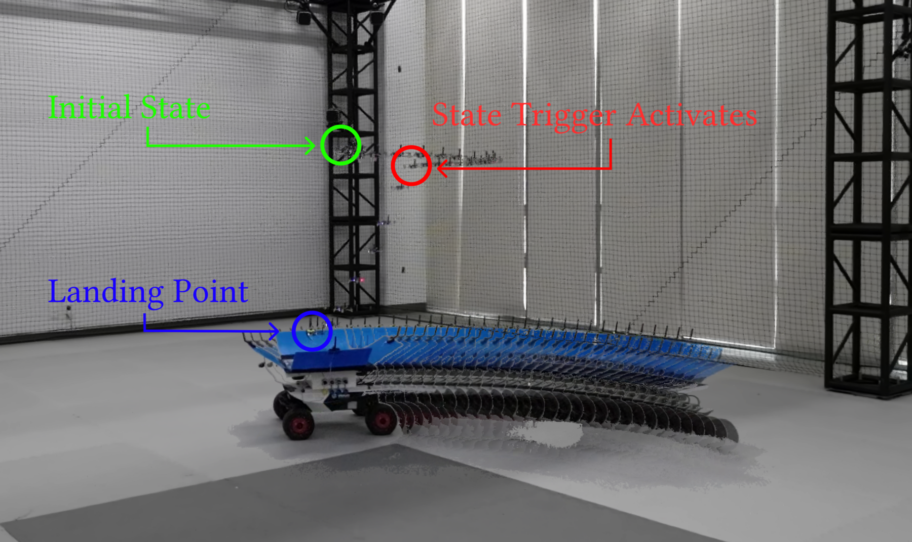
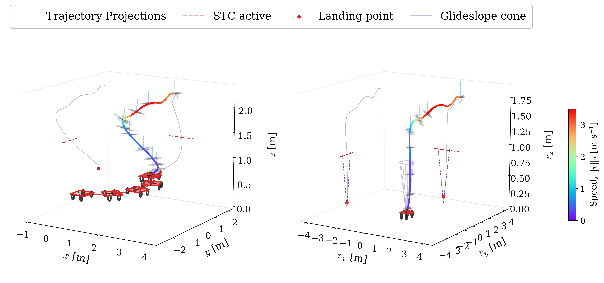
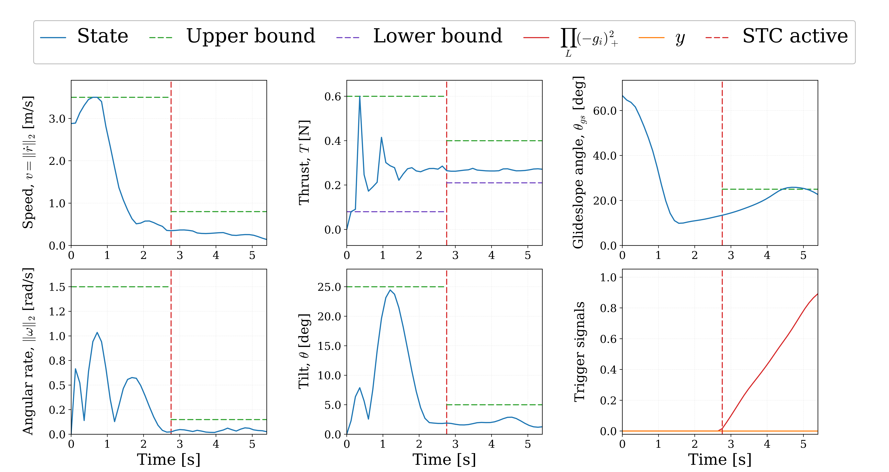
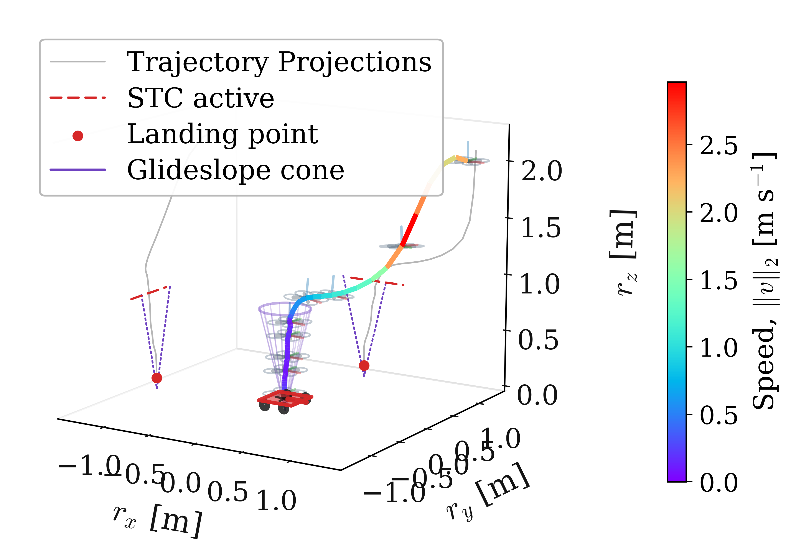
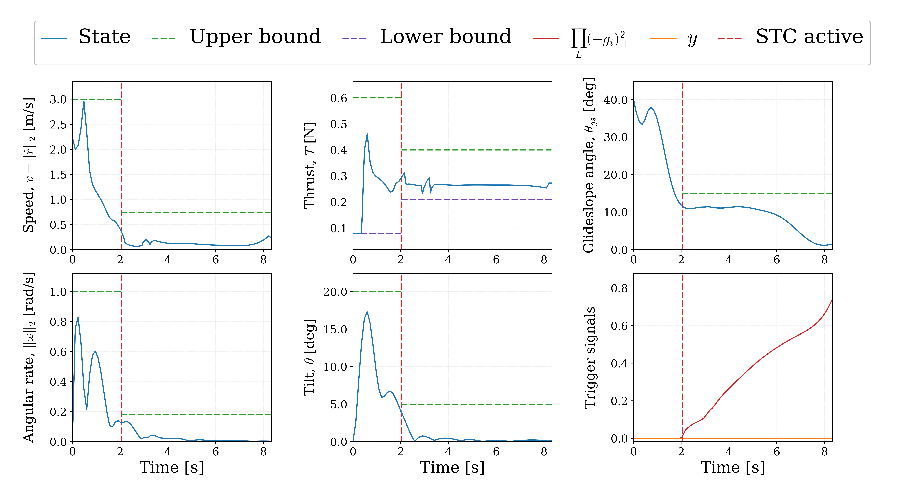
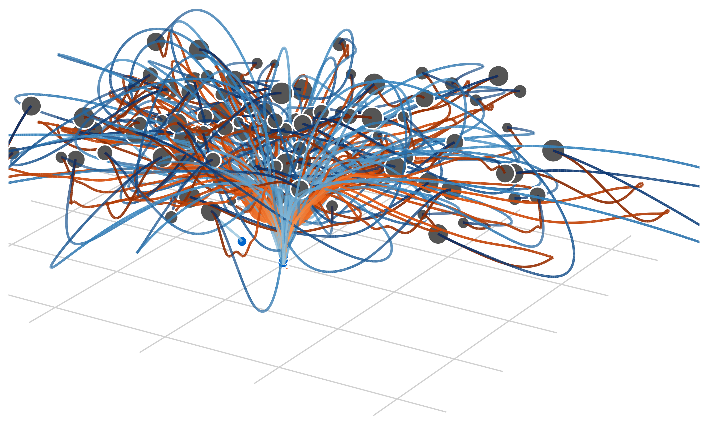
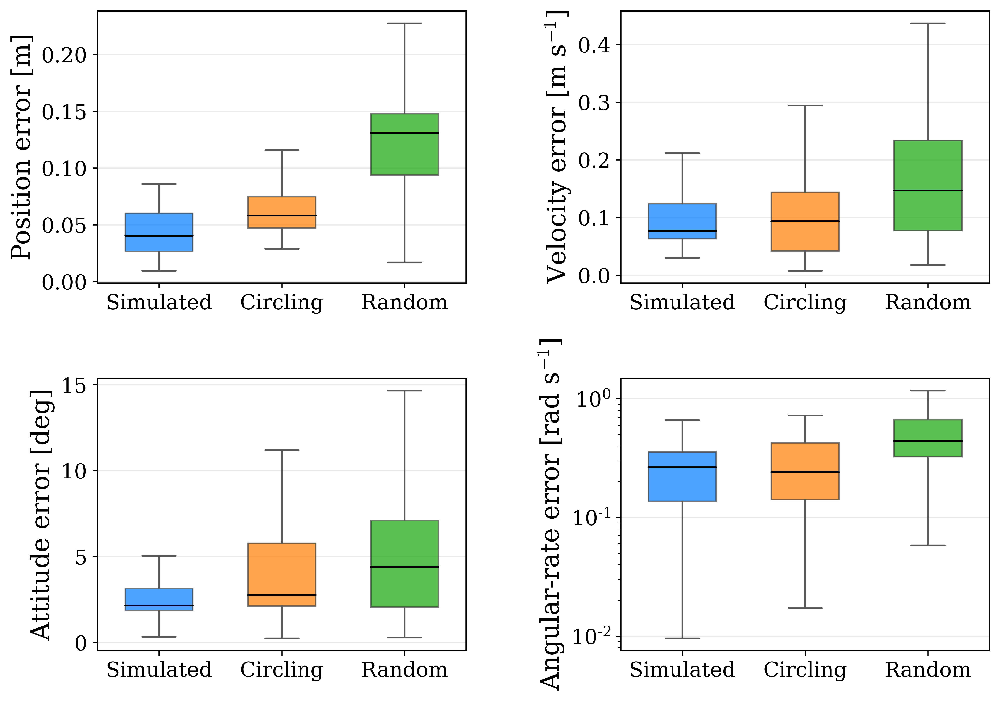
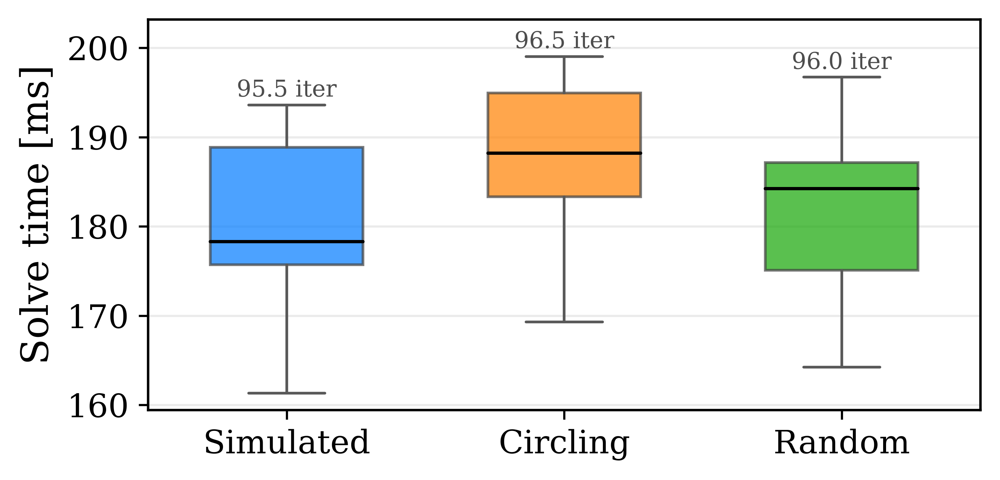
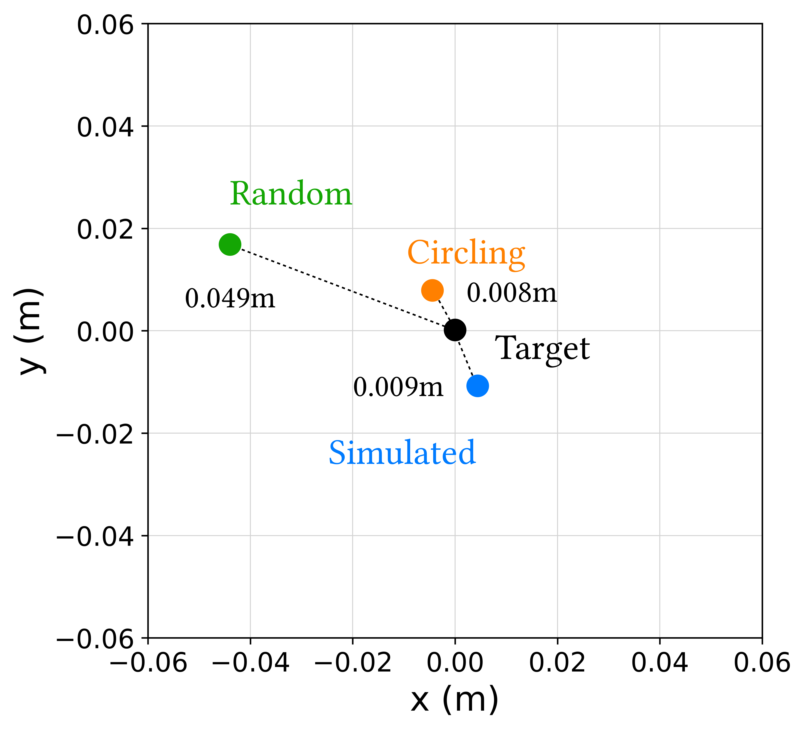
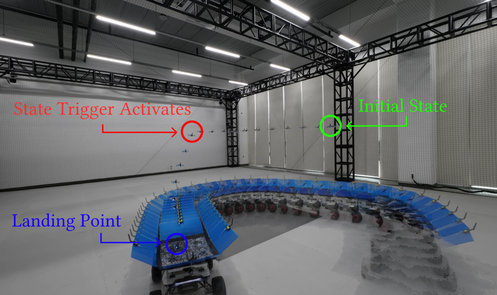

placeholder still — replace with 6–10 s loop cut from DJI_0018.MP4 (4K/120 fps)
ICCAS 2026
Department of Electrical and Computer Engineering, Inha University









A glideslope cone imposed over the entire planning horizon admits only a narrow family of initial conditions. Three treatments of the constraint are available, and each degrades the problem in a different way.
start over the platform: the only admissible initial condition is directly above the platform, which deletes the lateral approach and trivialises the problem.
ride the boundary: if the optimum leaves no margin, so an ordinary tracking error puts the next initial condition outside the cone.
widen the cone: opening it far enough to admit a realistic start leaves it too loose to shape the approach at all.
All three enforce the glideslope everywhere and run into different kinds of problems ... So why not impose the cone only where it actually means something?
Approaches to state-dependent logic in trajectory optimization divide by where the condition is enforced and by what is required of the solver. Mixed-integer and hybrid formulations introduce binaries or a prescribed mode sequence; smooth-robustness methods relax the logic into the cost; state-triggered constraints keep the condition hard while remaining continuous.
Compound state-triggered constraints and their continuous-time extension were developed within sequential convex programming. The formulation presented here carries that construction into differential dynamic programming.
The two limiting constraint configurations are evaluated on a common set of 100 randomized initial conditions, holding the solver fixed so that the difference is attributable to the constraint structure alone.
Enforcing the final-approach limits over the whole horizon renders every initial condition infeasible at x0: 85 violate the speed bound, 88 the glideslope bound, and their union covers all 100 samples. Removing the limits restores a 100/100 landing rate, but every resulting trajectory exceeds at least one final-approach safety bound and is therefore unsuitable for hardware execution.
Neither configuration yields a planner that both converges and remains within the safety envelope, which motivates a state-dependent activation of the tightened bounds.
Two trigger functions gate the final approach. Each is active where its value is negative, so their conjunction restricts the tightened bounds to the region below ztrig and within a horizontal radius Rcap. Lateral capture therefore precedes any tightening, and the approach remains unconstrained while the vehicle is still aligning with the target.
The resulting landing problem carries a logical implication rather than an ordinary inequality constraint:
Six consequences apply on activation: approach speed, tilt, body rate, the glideslope cone, and upper and lower thrust bounds. The activation instant is not prescribed; it is determined by the optimizer together with the rest of the trajectory.
An STC pairs a trigger \(g(\mathbf x)\) with a bound \(c(\mathbf x,\mathbf u)\le 0\) that must hold only where \(g(\mathbf x)<0\). The D-GMSR zero-set form encodes it as a scalar:
Logical AND multiplies the trigger factors; OR sums them:
The selected measures aggregate into a nonnegative integrand driving a scalar accumulator \(y\), co-integrated with the state by RK4:
The reference sequential-convex formulation bounds the growth of the accumulator on each interval. That form does not transfer to differential dynamic programming, where inequalities are enforced through interior-point log barriers that require strictly feasible iterates; a cold rollout with any positive residual violates a tight per-interval bound immediately.
The augmented-Lagrangian branch carries no such prerequisite, and the accumulator is monotone nondecreasing by construction. The entire continuous-time requirement therefore reduces to a single terminal equality.
Because the accumulator is co-integrated with the physical state, the trigger is re-evaluated on the current nonlinear rollout at every quadrature point. It is neither a frozen phase label nor an after-the-fact feasibility check, and its gradient enters the backward pass through the accumulator row of the augmented dynamics.
Both methods solve the same physical problem from the same 100 initial conditions on their native discretizations, without warm starting. cSTC-DDP returns 93 compliant landings and 98 landings in total, against 86 for the sequential-convex arm.
Median terminal position error is 6.76×10−5 m against 9.07×10−4 m, and median solve time is 0.95 s against 4.05 s, with the 95th percentile at 1.22 s against 9.51 s.
Closed-loop behaviour is evaluated in Gazebo across six planar target motions: straight, circular, figure-eight, stop-and-go, piecewise-acceleration and random-acceleration, at 50 trials per motion.
290 of the 300 trials land successfully, with the circular motion accounting for every failure at 40 of 50 and the remaining five motions at 50 of 50. A further 60 circular-motion trials introduce zero, nominal or high Gaussian uncertainty on the target position, velocity and acceleration estimates; all 60 land successfully.
The planner is exposed as a ROS 2 node with a solver core that carries no ROS types. State assembly rebases the vehicle odometry into the target-centered frame each solve; the solver returns a state, control and feedback-gain triple; and a replayer interpolates the plan against wall-clock time, handing off between the active and pending horizons.
A platform adapter isolates the airframe interface, so the same planner drives either a PX4 vehicle through MAVROS or a Crazyflie through Crazyswarm 2. Target kinematics enter through a separate publisher, which allows the estimator to be replaced without touching the planner.
A Crazyflie 2.1 lands on an ST-mini unmanned ground vehicle serving as the moving target, with motion-capture pose streamed over ROS 2 and onboard inertial measurements completing the state estimate. The solver runs off-board on an AMD Ryzen 7 4800HS as a ROS 2 node.
Replanning is event-driven at approximately 5 Hz, each solve warm-started from the shifted previous solution, with median solve times of 178 to 188 ms across conditions. Median tracking error against the planned reference ranges from 40 mm in simulation to 131 mm under random target motion.
The trigger fires between 6.56 and 8.19 s in all runs, followed by a descent phase of 0.98 to 1.42 s.
Over the active phase the executed trajectory shows zero excess on speed, tilt and thrust. Peak glideslope excess remains at or below 0.098 m, and peak body-rate excess at or below 0.477 rad/s.
Both methods solve the same problem from the same initial conditions on their native discretizations — 80 DDP intervals and 21 sequential-convex nodes — without warm starting.
| Metric | cSTC-DDP (ours) | Sequential-convex arm |
|---|---|---|
| Compliant landings / 100 | 93/100 | 86/100 |
| All landings / 100 | 98/100 | 86/100 |
| Median &lVert;ep&rVert; [m] | 6.76×10−5 | 9.07×10−4 |
| Solve time, median / p95 [s] | 0.95 / 1.22 | 4.05 / 9.51 |
| Metric | Simulated | Circling | Random |
|---|---|---|---|
| ttrig [s] | 6.63 | 6.56 | 8.19 |
| Landing time [s] | 7.82 | 7.98 | 9.17 |
| Descent time [s] | 1.20 | 1.42 | 0.98 |
| Glideslope excess [m] | 0 | 0.098 | 0.011 |
| Body-rate excess [rad/s] | 0.048 | 0.057 | 0.477 |
TO ADD — repository link and build instructions.
@inproceedings{noh2026cstcddp,
title = {Compound State-Triggered Constrained {DDP} for Receding-Horizon
Quadrotor Landing on a Moving Platform},
author = {Noh, SungJin and Kim, Yong-Hee and Kim, Yeohosua and Kim, Kwang-Ki K.},
booktitle = {International Conference on Control, Automation and Systems (ICCAS)},
year = {2026}
}